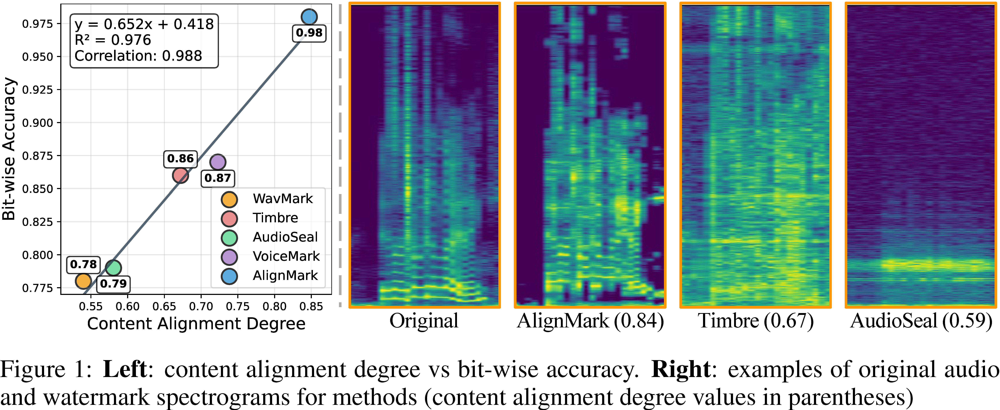
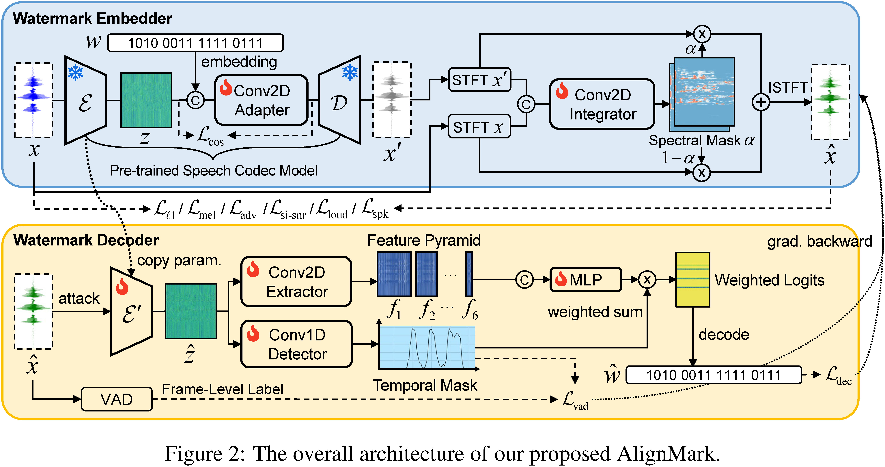

Summary

Abstract
Audio watermarking, which embeds identity information into audio for authenticity verification, is an effective approach to protecting the intellectual property of audio content creators.
A key unresolved challenge in audio watermarking is the limited robustness of existing methods under real-world neural transformations, such as denoising, codec, and vocoder reconstruction,
which can render watermarks removable or undetectable. To better understand this challenge, we introduce the content alignment degree (CAD) metric, which quantifies the extent to which watermarks
are integrated into audio, and observe a positive correlation between CAD and watermark robustness. Guided by CAD, we propose AlignMark, a content-aligned audio watermarking method that leverages
spectral masking in the embedder, temporal masking in the decoder, and multiple perceptual losses to explicitly align watermark embedding with audio content and improve robustness against diverse
attacks while preserving perceptual quality. Furthermore, a feature pyramid-based decoder extracts watermarks across multiple scales, enhancing reliability under pitch shifts and spectral
distortions. Extensive experiments on multiple datasets and 21 attack scenarios demonstrate that AlignMark achieves state-of-the-art performance, with an average bit-wise accuracy of 0.98
and false attribution rate of 0.05, while maintaining imperceptible impact on audio quality.
Method Overview

The architecture of AlignMark, shown in Figure~\ref{fig:architecture}, includes a watermark embedder and a watermark decoder.
Spectral and temporal masking are jointly trained to support content-aligned watermarking.